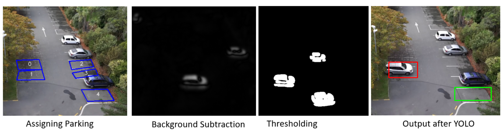

Read the final published paper →
The problem
- Prolonged parking overstays result in revenue loss for the parking company.
- The current manual method of detecting parking occupancy is inefficient and requires parking officers.
Solution
Implement a high-mounted camera system with computer vision algorithms and deep learning to validate parking spot occupancy.
Key steps
- Grey scaling and Gaussian blur
- Background subtraction
- Thresholding
- Dilation
- Non-zero pixels
- YOLO neural network

Results
| Method | Accuracy | Explanation |
|---|---|---|
| Background subtraction only | 50% | Detected every small movement |
| Background subtraction + thresholding | 72% | Filtered out small movements |
| Background subtraction + Gaussian blur + thresholding + dilation | 84% | Reduced noise from the image; still detected humans and other non-vehicle related movements |
| Addition of YOLO neural network | 91% | Eliminated non-vehicle related movement |
The final achieved accuracy was 91%, surpassing previous research on this application (IEEE reference).
Future work
- Further train YOLO to improve accuracy in classifying detected movements.
- Implement multiple cameras to capture images from different angles, preventing small cars from being hidden by larger neighbouring cars.
- Develop a web app for parking companies to automate monitoring of their parking spots.